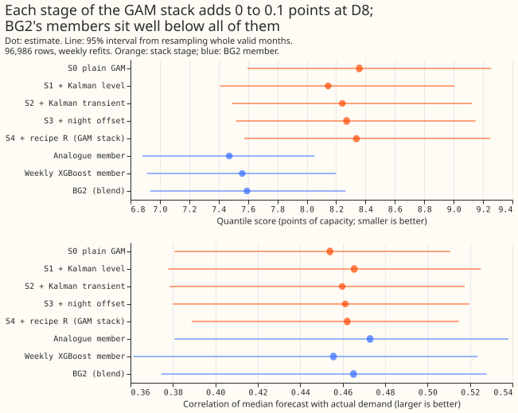
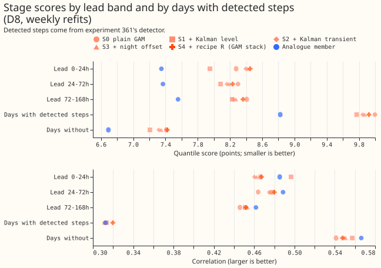
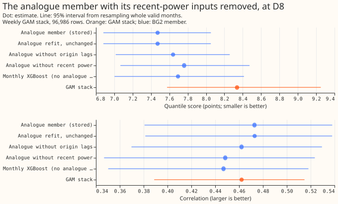
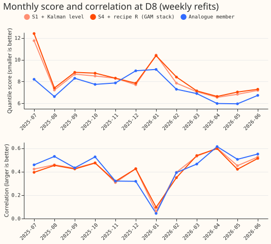
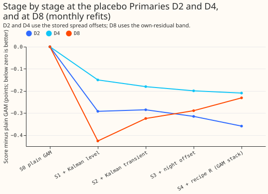
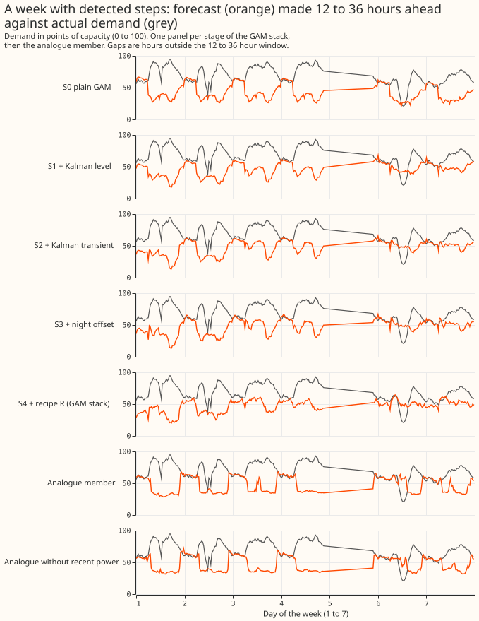
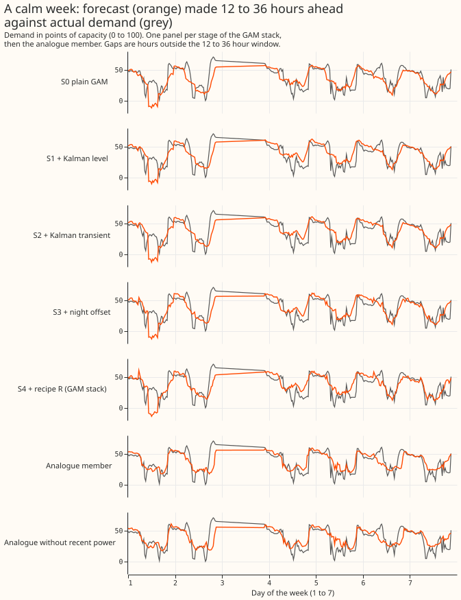
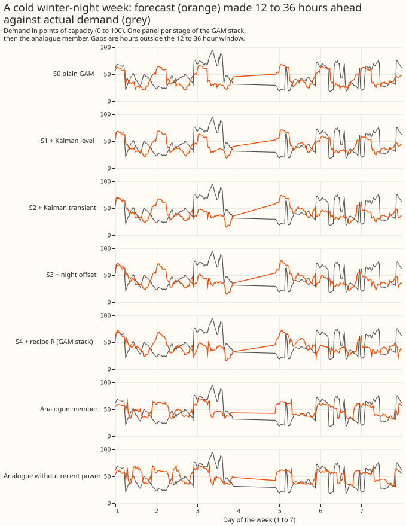
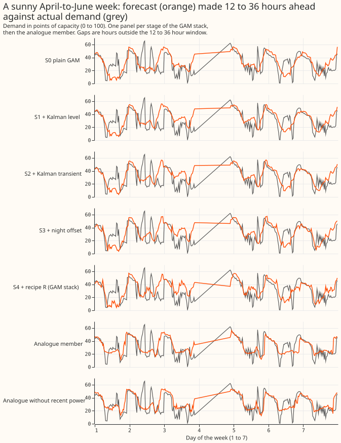

Which stage of the GAM stack loses skill at D8 against BG2's members, and does the analogue member win because it sees recent power?
Take-home message: the Kalman filter's short-lived correction hurts D8's forecast at leads under 24 hours, the other correction stages do not, and recent power explains about a third of the analogue member's lead.
This experiment asked where the GAM stack loses skill at the substation D8 (Marsh Lane, a primary substation) against BG2, and whether BG2's analogue member wins because it sees recent power. The analogue member is one of BG2's five members (weekly XGBoost, monthly XGBoost, analogue, pooled by substation type, and an XGBoost stack). XGBoost is a gradient-boosted decision tree method. The analogue member adds the mean and median of the demand at the same time of day on the six previous weeks, and three "origin lags": demand observed shortly before the forecast was issued. The GAM stack is Primary demand research default 1: a GAM, a Kalman filter on recent errors (a slowly moving "level" and a short-lived "transient"), a winter night offset, recipe R (subtract 0.75 times the last 14 days' mean error by half-hour), and an uncertainty band fitted on D8's own past errors (the "own-residual band"). BG2 is the blend of five forecasts described in experiment 87. We read each stage's stored forecast from experiments 354 and 355, scored each stage and each BG2 member on the same 96,986 half-hourly rows, and refitted the analogue member twice with its recent-power inputs removed. Scores are the quantile score (twice the mean pinball loss over 11 quantiles, in points of D8's 10.38 MW capacity; lower is better), the mean absolute error (MAE) of the median in MW, the bias (forecast minus actual) in MW, and the Pearson correlation of the median with the actual demand.
Over all leads, no stage adds more than 0.1 points of score: the plain GAM with the Kalman level
scores 8.146 and the full stack 8.338, against 7.472 for the analogue member. At leads of 0 to 24
hours the Kalman transient adds 0.444 points. Removing recent power from the analogue member raises
its score from 7.472 to 7.761. The verdict is partly supported: one stage (the Kalman transient,
at 0 to 24 hours) meets the blame rule, and the analogue refit stayed below the predicted 8.0.
Caveat. This result is interim: it covers one substation and one scored year. Whether a generator sits behind D8 is unproven (experiments 264, 265, and 291). The lead range is 0 to 168 hours, so the full 1-to-10-day horizon is not covered. The stages use weekly refits (monthly refits give the same pattern for S1 to S4).









Arms and numbers (D8, weekly refits, 96,986 rows)
- Stages (each scored with the own-residual band built from that stage's own median): S0 the
plain GAM; S1 plus the Kalman level; S2 plus the Kalman transient; S3 plus the winter night
offset; S4 plus recipe R (the GAM stack). The stage medians come from stored columns (
mean - level - anomaly,mean - anomaly,mean) and experiment 252's stage-2 arms. - Gate: S4 scores 8.338 (monthly refits 8.382) and BG2 reblends to 7.593, as stored.
- Score (95% interval, whole valid months resampled): S0 8.358 (7.596 to 9.256); S1 8.146 (7.411 to 9.004); S2 8.242 (7.492 to 9.125); S3 8.271 (7.518 to 9.150); S4 8.338 (7.575 to 9.251); weekly XGBoost 7.560; monthly XGBoost 7.694; analogue 7.472 (6.882 to 8.052); pooled by type 7.633; XGBoost stack 8.562; BG2 7.593.
- Stage contrasts (score): S1 minus S0 -0.212 (-0.526 to +0.051); S2 minus S1 +0.096 (+0.041 to +0.159); S3 minus S2 +0.029 (+0.006 to +0.053); S4 minus S3 +0.067 (-0.014 to +0.167); S4 minus S0 -0.020 (-0.339 to +0.249). The own-residual band lowers the score by 2.046 (-2.609 to -1.516) against the stored band.
- Stage contrasts by lead band (score, 95% interval): S2 minus S1 is +0.444 (+0.277 to +0.641) at 0 to 24 h, +0.079 (+0.015 to +0.150) at 24 to 72 h, and +0.017 (-0.018 to +0.061) at 72 to 168 h. At 0 to 24 h the correlation falls by 0.036 (-0.059 to -0.013) and the MAE rises by 0.054 MW (+0.029 to +0.082). S1 minus S0 is -0.326 (-0.599 to -0.116) at 0 to 24 h. S4 minus S3 is +0.088 (-0.007 to +0.208) at 72 to 168 h.
- Recent power by lead band: removing it raises the analogue score by +0.354 (+0.175 to +0.574) at 0 to 24 h, +0.323 (+0.143 to +0.548) at 24 to 72 h, and +0.255 (+0.060 to +0.503) at 72 to 168 h. The analogue refit without recent power scores 7.761, worse than monthly XGBoost's 7.694, which keeps the origin lags and has no analogue columns.
- Correlation: 0.454 (S0), 0.465 (S1), 0.460 (S2), 0.461 (S3), 0.462 (S4), 0.473 (analogue), 0.465 (BG2). The largest fall, S2 minus S1, is -0.0056 (-0.0142 to +0.0031) over all rows and -0.0082 (-0.0146 to -0.0029) on days without detected steps. On days with steps it is -0.0019 (-0.0173 to +0.0131). The prediction that a stage lowers correlation only on step days failed.
- Bias and error: bias -0.321 MW (S0), -0.071 (S1), -0.107 (S4), +0.176 (analogue). MAE 1.526 MW (S0), 1.486 (S1), 1.503 (S4), 1.408 (analogue). Over all rows the analogue member's MAE is 0.094 MW below S4's (-0.160 to -0.017).
- By lead band (score): S1 7.95, S4 8.45, analogue 7.35 at 0 to 24 h; S4 8.23 and analogue 7.37 at 24 to 72 h; S4 8.36 and analogue 7.56 at 72 to 168 h.
- By detected-step days (experiment 361's detector): S4 9.92 and analogue 8.82 on step days; S4 7.42 and analogue 6.69 on days without. The stack trails the analogue by 1.10 and 0.73 points.
- Analogue refits (monthly refits at D8, experiment 87's recipe, same seed; the unchanged refit reproduces the stored 7.472):
| Arm | Score | Minus unchanged refit |
|---|---|---|
| Unchanged | 7.472 (6.881 to 8.052) | 0 |
| Without the three origin lags | 7.641 (7.015 to 8.258) | +0.168 (+0.063 to +0.296) |
| Without origin lags or analogue power from the last 7 days | 7.761 (7.066 to 8.474) | +0.289 (+0.103 to +0.525) |
| Monthly XGBoost (no analogue columns, origin lags kept) | 7.694 (7.003 to 8.413) | +0.222 (+0.086 to +0.425) |
Without recent power the analogue member still beats the stack by 0.58 points; recent power accounts for about a third of the analogue member's 0.866-point lead (+0.289 of 0.866). - Other substations D2 and D4, where no effect is expected (monthly refits, stored spread offsets): at D2 the Kalman level lowers the score by 0.292 (S1 minus S0, -0.437 to -0.149) and the stages together from 2.437 to 2.079 (S4 minus S0 -0.359, -0.502 to -0.213), at D4 from 2.504 to 2.294 (-0.210, -0.476 to +0.056). Prediction 3 (no stage moves D2 or D4 by more than 0.1) failed at D2. - Tails (D8): q05 to q95 coverage 0.847 (S4), 0.925 (analogue), 0.904 (BG2); share below q01 0.038 (S4), 0.004 (analogue); pinball at q99 0.648 (S4), 0.469 (analogue). The stack's own-residual band is too narrow at both ends. - Curtailment cost: not scored; this experiment compares medians and bands at one substation.
Checks
- Median minus mean forecast. The stages' own-residual band moves the median off the stage's mean forecast by 1.37 points on average for S4 (1.24 for S1, 2.14 for S0), because the band's median residual is added. The members' mean equals their median. The shift is the same rule for every stage, so it does not favour one stage.
- Error of the median beside the score contrasts. The score and MAE contrasts agree in direction at every stage (S2 minus S1: score +0.096, MAE +0.009 MW), so audit trigger 3 did not fire.
- Triggers fired. Trigger 2 fired: predictions 1, 2, and 3 failed. The explanation that the lead sits in the XGBoost members' inputs and not in recent power is supported by the monthly-XGBoost row of the analogue table. Trigger 5 fired: the plain GAM with the Kalman level (S1) beats the stack (S4) that contains it. Triggers 1, 3, 4 (not applicable to one substation), 6, and 7 did not fire. A separate audit re-derived the headline scores, contrasts, and correlations from the stored frame with its own code and found them correct. Its findings on wording are applied here.
Caveats and what to try next
- Stage medians come from stored columns. The plain-GAM median is
mean - level - anomalyof the stored base frame, and the step-day flag uses experiment 361's detector over the whole record, so step days are hindsight labels. - Analogue refits. Without the origin lags the lag columns are NaN in training and prediction. Recent power in the "no recent power" arm means all power newer than 7 days before the origin. The XGBoost members' weather inputs are unchanged.
- Next: compare the weather and calendar inputs of the XGBoost members with the GAM's at D8, then test the best of them inside the GAM.
- Code:
ml-experiments/00364-d8-stage-blame-and-analogue-recent-power/imports the folders of experiments 87, 252, 264, 354, and 361. Printed numbers:printed_report.txt,printed_checks.txt.